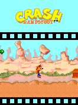

Our Crash runtime still had internal functions named banjo_*. Those were host interfaces left over from the first bridge in this family. They were now executing Crash’s own original game, with another set of gaps to fill.XC01
An inherited core, another contract.
South Park’s full-width arrays, font input separation and service repairs were already present. Crash added wide-character String and drawing support, pen-color handling and dialog layout from the original runtime contracts. The original EXN bytecode and assets remained the game being run.XC01

Original Crash Bandicoot first stage in a132×176 host framebuffer, retained from the original0.1.0 acceptance. Not a new0.1.1phone capture.
Open the image for the full original view.
XC90Its original moves also stayed distinct: run, jump, spin and crouch, with separate flip and slide keys. Menu Select and the original pause/back command were not interchangeable with all those gameplay actions.XC05XC06
Ready after writing.
The audio failure was circular. MODE_STATIC AudioTrack correctly reported STATE_NO_STATIC_DATA before its first write. The old player demanded STATE_INITIALIZED first, rejected the healthy empty track and never submitted the samples that would change its state.XC02XC08
We accepted the waiting-for-data state, wrote the complete original PCM buffer, checked the accepted byte count and readiness, then played it. The synthesis stayed as it was. We also let paused melodies retain their loaded data and ignored stale work after close.XC02
The integrated framework route drove the original EXN through its real native VM and JNI into that repaired player. The startup melody submitted 936,684 bytes and started with zero reported audio errors. That is a much stronger boundary than merely finding a melody in the archive, while still stopping short of a phone listening verdict.XC04XC09
Where the original asks for music.
The captured game requested startup and new-game melodies and issued its own stops. The repair followed those events; it did not add a continuous soundtrack to stages the original left silent.XC04
We also had to correct the account of import support. My installed Omni had shown Ready. A local dependency simulation had been described too strongly; it wasn’t an actual public import rejection. The later notes kept that correction alongside the audio work.XC07XC04
About these records
The banjo_ symbol names describe retained ABI compatibility, not substituted gameplay. Original native execution, Android framework output and physical speaker playback retain separate scopes. The static-track defect is reproduced with real framework player lifecycle and a host output sink. Current public import behavior is not inferred from a local dependency simulation. The stage image is historical host output.
The receipts
Selected report lines, investigation notes and recorded feedback. Each receipt keeps its original source and scope.
XC01 / South Park repairs and the surviving banjo ABI namesCheckpoint investigation notes
Source: 22-Crash_Bandicoot_ExEn_Bridge_v0.1.1_PRIVATE_CHECKPOINT.zip / Crash_Bandicoot_ExEn_Bridge_v0.1.1_PRIVATE/native/README.md · selected lines 1–19
# Crash ExEn runtime Portable ExEn VM adapted from Handyplay / mohamedahmed166e, pinned upstream 460b149302e9a52523bc314a37efabbee9f3d666, AGPL-3.0. See LICENSE-AGPL-3.0.txt. Current source includes the reused South Park full-width array repair, original font input separation, native diagnostic snapshots and SMS price handler. Crash adds String construction from wide character arrays, wide drawChars input, canonical zero/black pen handling, and DialogBox line layout/render services from the original runtime class contracts. Manufacturer-specific dialog decoration has no physical-reference comparison. Original EXN bytecode/assets are unchanged. Use ../tools/build-native.sh with Zig 0.15.2. Host ABI symbols retain the original banjo_* names for compatibility; they are internal and execute the game provided as game.exn, with no Banjo game logic. JNI identity is com.wakka.crashexen. Android ARM64 library has 16 KiB segments and no external dynamic dependencies. The original 5x8 atlas is loaded from assets/font_5x8.bin at runtime, never embedded in the compatibility ELF. Both firmware classes and font are original inputs. The game-requested timer is 75 ms on the first stage. FIFO input does not add extra ticks. Detailed tracing is disabled. Native game saves are isolated per app.
XC90 / Historical image / Crash Bandicoot original first stageHistorical host capture
Source: Crash_Bandicoot_ExEn_Bridge_v0.1.1_PRIVATE/evidence/acceptance/07_live_stage.png
Original game pixels retained from the stated historical host check. No physical-phone capture is implied.
Unchanged historical image. Source member: Crash_Bandicoot_ExEn_Bridge_v0.1.1_PRIVATE/evidence/acceptance/07_live_stage.png SHA-256: 229552a048298f9cf6df1cf88a1f630ef898d24e22ca67dea876be02d1643956 Original Crash Bandicoot first stage in a132×176 host framebuffer, retained from the original0.1.0 acceptance. Not a new0.1.1phone capture. Scope: Historical desktop original-runtime framebuffer; not a physical-phone screenshot.
XC05 / The original flip and slide keys stay distinctCheckpoint investigation notes
Source: 22-Crash_Bandicoot_ExEn_Bridge_v0.1.1_PRIVATE_CHECKPOINT.zip / Crash_Bandicoot_ExEn_Bridge_v0.1.1_PRIVATE/README_FIRST.txt · selected lines 36–41
CONTROLS D-pad left/right runs, up jumps, down crouches. JUMP repeats original 2 beside SPIN (5). FLIP 1/3 and SLIDE 7/9 remain separate original moves. SELECT advances menus. BACK / PAUSE (-7) opens the original Quit?/No menu; choose No with SELECT to resume. Literal # and * remain accessible. ORIGINAL KEYPAD / D-PAD RETURN switches inline. Android Back cleans up and exits.
XC06 / Original controls, state replay and host scopeCheckpoint investigation notes
Source: 22-Crash_Bandicoot_ExEn_Bridge_v0.1.1_PRIVATE_CHECKPOINT.zip / Crash_Bandicoot_ExEn_Bridge_v0.1.1_PRIVATE/evidence/host-acceptance.txt · selected lines 20–55
{
"scope": "Original game executed on host; Android phone play is separate",
"actions_against_no_input": {
"run_left": true,
"run_right": true,
"jump": true,
"spin": true,
"crouch": true,
"somersault_1": true,
"somersault_3": true,
"slide_7": true,
"slide_9": true
},
"original_help_scroll": true,
"original_right_softkey_pause": true,
"state_replay": true,
"metrics": {
"ticks": 425,
"faults": 0,
"warnings": 1,
"error": "parseLayout failed: BadOffsetTable (non-fatal \u2014 VM uses classfile parser directly)",
"width": 132,
"height": 176,
"period_ms": 75,
"heap_objects": 94,
"audio_plays": 2,
"audio_stops": 2,
"input_overflows": 0
},
"original_game_sha256": "07ea57e1775ffe0b2ab563204a42b389e2360101db1ebb53d145524f56ccd4b2",
"limitations": [
"No campaign completion",
"No physical phone audio/heat/touch testing",
"Dialog native layout uses recovered original contract; manufacturer decoration unverified",
"Public Omni export requires original ExEn runtime/font inputs beyond the EXN"
]XC02 / A healthy empty AudioTrack was rejectedCheckpoint investigation notes
Source: 22-Crash_Bandicoot_ExEn_Bridge_v0.1.1_PRIVATE_CHECKPOINT.zip / Crash_Bandicoot_ExEn_Bridge_v0.1.1_PRIVATE/VERIFICATION.txt · selected lines 3–20
REPRODUCED ROOT CAUSE Android MODE_STATIC AudioTrack begins in STATE_NO_STATIC_DATA (2) until its first successful write. The previous code required STATE_INITIALIZED (1) before writing; it rejected a valid track and never submitted any PCM. The actual Android API34 framework reproduces the failure in evidence/audio-baseline-failure.txt using the v0.1.0 source and Crash's original melody data, without mocking the player, AudioTrack constructor, getState or write/play lifecycle. Reference: https://developer.android.com/reference/android/media/AudioTrack The platform audio output sink is supplied by Robolectric's stock native shadow; this is not a physical speaker or Android-device listening test. AUDIO REPAIR Accept a healthy waiting-for-data track. Submit the entire PCM16 buffer through the supported ByteBuffer write API. Validate accepted byte count and readiness before play. Preserve the original synthesis function exactly. Stop cancels queued work; paused tunes retain their loaded buffer; late callbacks after close are ignored. Keep the actual failure message in independent report snapshots.
XC08 / The original player fails before filling its bufferHistorical framework regression output
Source: 22-Crash_Bandicoot_ExEn_Bridge_v0.1.1_PRIVATE_CHECKPOINT.zip / Crash_Bandicoot_ExEn_Bridge_v0.1.1_PRIVATE/evidence/audio-baseline-failure.txt · selected lines 2–3
EMPTY_STATIC_TRACK_STATE=2 java.lang.AssertionError: Original melody was rejected before its static PCM buffer could be filled expected:<0> but was:<1>
XC04 / Original VM through JNI into repaired Android audioCheckpoint investigation notes
Source: 22-Crash_Bandicoot_ExEn_Bridge_v0.1.1_PRIVATE_CHECKPOINT.zip / Crash_Bandicoot_ExEn_Bridge_v0.1.1_PRIVATE/VERIFICATION.txt · selected lines 41–48, 59–66
END-TO-END ACTIVITY / NATIVE CHECKS Three full integrated Android framework scenarios pass. Cold startup drives the original EXN through its real native VM/JNI/controller into the repaired audio player. The genuine startup melody receives 936,684 bytes, starts playback and reports zero audio errors. Existing original renderer, inline modes, independent pad/action ownership, physical-owner preservation, Back/cleanup and independent SAVE REPORT capture with a blocked game worker continue to pass. See evidence/android-integration.txt. [... selected excerpt ...] SCOPE / LIMITS No phone/speaker listening acceptance is implied. Original handset timbre, full campaign audio coverage and live Downloads export remain unverified here. The captured original run requests startup/new-game melodies and sends original stop events; this patch adds no continuous soundtrack to otherwise silent stages. The user's installed Omni showed the prior bridge as Ready. The earlier local EXN-only dependency simulation was not an actual Omni rejection. No new claim about current public Omni preparation is made by this audio-only bridge update.
XC09 / Both original melody buffers pass the release-class testsHistorical framework test output
Source: 22-Crash_Bandicoot_ExEn_Bridge_v0.1.1_PRIVATE_CHECKPOINT.zip / Crash_Bandicoot_ExEn_Bridge_v0.1.1_PRIVATE/evidence/audio-release-class-tests.txt · selected lines 1–6
Android API34 AudioTrack framework check; host output sink, no physical speaker claim. [Robolectric] WARN: Android SDK 36 requires Java 21 (have Java 17). Tests won't be run on SDK 36 unless explicitly requested. EMPTY_STATIC_TRACK_STATE=2 ORIGINAL_MELODY_1 accepted_bytes=936684 peak=4915 state=1 play_state=3 ORIGINAL_MELODY_2 accepted_bytes=936684 peak=4915 state=1 play_state=3 CRASH ANDROID AUDIO: tests=6 failures=0
XC07 / The installed Omni said ReadyCheckpoint investigation notes
Source: 22-Crash_Bandicoot_ExEn_Bridge_v0.1.1_PRIVATE_CHECKPOINT.zip / Crash_Bandicoot_ExEn_Bridge_v0.1.1_PRIVATE/README_FIRST.txt · selected lines 44–49
OMNI Original recognition, import rules, UI resources and stable save identity are unchanged. The user's installed Omni marked the previous bridge Ready. The old checkpoint's EXN-only audit did not test Omni's real export/import handling and must not be read as a confirmed Omni export blocker. This audio update introduces no new preparation operation or original asset.